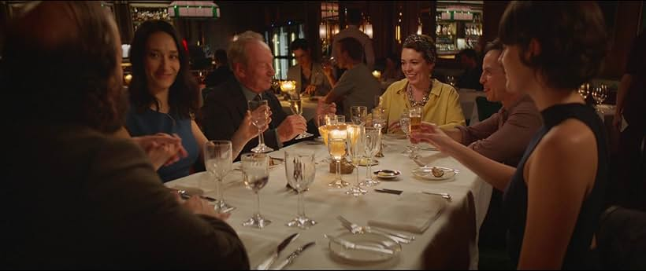
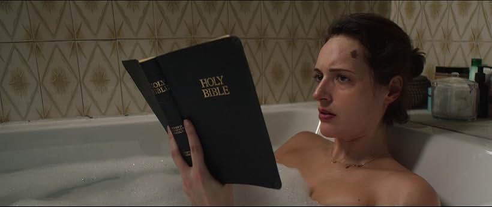

Reparto
Comedia creada y escrita por Phoebe Waller-Bridge.
Premios
Waller-Bridge ganó el premio de la Academia Británica de Televisión a la Mejor Interpretación de Comedia Femenina por la primera temporada.
La segunda temporada recibió 11 nominaciones al premio Primetime Emmy y ganó seis, con Waller-Bridge ganando Mejor Serie de Comedia, Mejor Actriz Principal y Mejor Escritura para una Serie de Comedia.
La serie recibió el Globo de Oro a la Mejor Serie de Televisión y Mejor Actriz por Waller-Bridge, y una nominación para Scott.
Curiosidades
Fleabag parecía ser una simple comedia de media hora que seguía las hazañas, a menudo traviesas, de su peculiar personaje principal. Sin embargo, rápidamente demostró ser un trabajo verdaderamente magistral y cada episodio agregó capas más complicadas y temas más oscuros con los que muchos espectadores pueden identificarse.